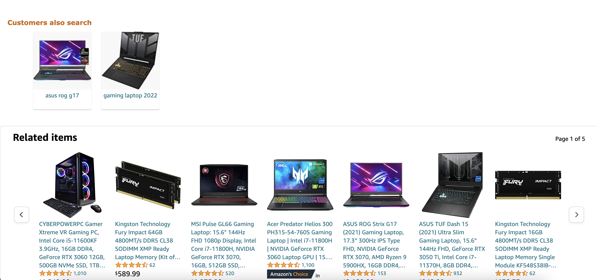
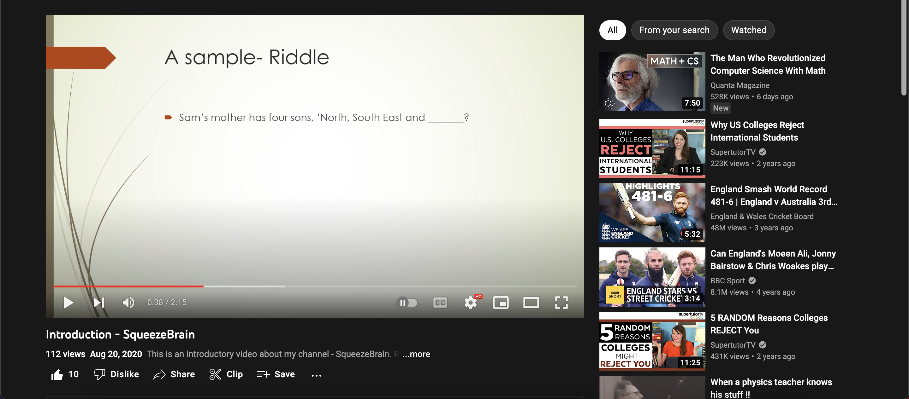

Real time machine learning use cases
In this documentation, we will be covering the real time use cases of machine learning and related algorithms. Examples from the real world are used to make the basics clearer even better.
What is Machine Learning?
Machine Learning is a popular buzzword in today's world. Let us try to understand what it means. Machine Learning (ML) means making machines make decisions by providing some experience. Many people confuse Artificial Intelligence (AI) and Machine Learning as a single concept. Machine Learning is a subset of AI, while AI covers other concepts like Deep Learning (DL). I have deployed documentation covering just the basics of machine learning and algorithms. Take a look.
Since machine learning is ubiquitous in today's world, let us look at some of its most common use cases.
Recommendation Algorithms
The recommendation algorithm is probably the first algorithm that comes to your mind when you hear 'machine learning.' As the name states, this algorithm makes recommendations based on your likes or popular trends. Nearly all E-Commerce websites such as Amazon use it.
Even YouTube recommends videos based on your liking.
Recommendation algorithms use a scoring scale. Based on one's liking, the suggestions are scored and recommended accordingly. The score increases when a customer is interested. However, the score decreases if the customer is not. You might have clicked the "I am not interested" button sometimes. The local popularity of the item/product also affects the score.
Forecasting Algorithms
Forecasting algorithms predict the future values of a product. Since stock market investors have a lot to lose, they rely on these algorithms to be safer.

Image from https://econlife.com/2019/12/stock-market-predictions-2/
Such algorithms may use regression, classification, or clustering models. For example, decoration shops witness a spike in sales in December due to Christmas and New Year's Eve. Forecasting algorithms consider such trends to return a future value. Such confident trends are known as seasonal trends.
ARIMA (Auto-regressive Integrated Moving Average), SARIMA (Seasonal Auto-regressive Integrated Moving Average), and TBATS are the most popular forecasting algorithms used in real-time.
Commute Estimations
Commute Estimations are the most trafficked algorithms. Online GPS systems like Google Maps and Apple Maps are all about commute estimation algorithms. The specific name of this algorithm is Dijkstra's algorithm. You can read Dijkstra's algorithm in detail on my documentation website.

This algorithm works with graphs. Suppose that a person wants to travel from A to B. Simply charting a road map wouldn't be accurate as traffic calculations play a vital part in reaching the destination at the earliest. Dijkstra's algorithm approximates the best route. The graph takes in weights (traffic, distance, and other factors). Then, the best way is graphed and recommended.
Email Intelligence
Email intelligence algorithms mark emails as spam and non-spam. Such algorithms need experience, provided by many sample spam emails. The algorithm detects similarities within spam emails and compares them with real-time emails. If they contain a lot in common, the emails are marked as spam.
Virtual Assistants
Virtual Assistants are familiar utilities. Siri, Alexa, Cortana, etcetera are seen in almost every house. The algorithm is the most popular algorithm today. They usually contain an interface with other forms of Artificial Intelligence, but machine learning is the heart. Such models rely heavily on experience to make decisions. They learn their owner's voice, predict human speech, and take action. They train and improve themselves.
This is it for this blog. Make sure to read my documentation to learn more about Machine Learning and Algorithms.